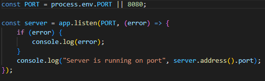
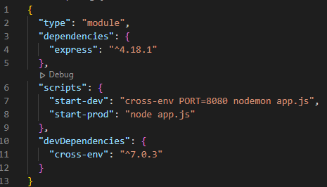
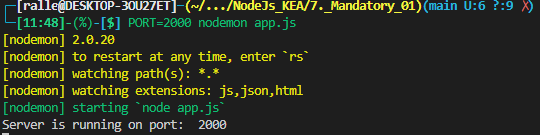

Environment variables provide information about the environment in which the process is running.
We can use it for database password or other sensitive data.
In the picture below we use environment variables for what port the server listen on.
Before we do the above we need to install a tool called cross-env.
Cross-env makes it so you can have a single command without worrying about setting or using the environment variable properly for the platform.
Cross-env can be installed: 'npm install --save-dev cross-env'
To define a port in Node.js through the command line then we define the variable as the first.
'PORT=2000 nodemon app.js'
Redirecting is when we redirect to another location.
Redirecting can be done frontend or backend.
html a tag
javascript window.location
Meta data meta http-equiv="refresh" content="time_delay; url=new_url"
Can be done with GET methods.
The URL sends a endpoint to the backend that handle it and response with a html file.